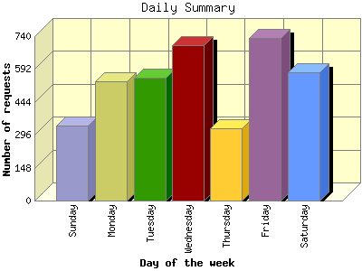

The Daily Summary identifies the level of activity as a total for each day of the week. This summary also compares the level of activity on weekdays and weekends as a total for the report time frame.

| Day of the week | Number of requests | Number of page requests | |
|---|---|---|---|
| 1. | Sunday | 336 | 98 |
| 2. | Monday | 536 | 130 |
| 3. | Tuesday | 555 | 103 |
| 4. | Wednesday | 701 | 166 |
| 5. | Thursday | 325 | 63 |
| 6. | Friday | 732 | 163 |
| 7. | Saturday | 576 | 154 |
| Total Weekdays | 2,849 | 625 | |
| Total Weekend | 912 | 252 | |
This report was generated on September 30, 2012 06:59.
Report time frame September 1, 2012 01:16 to September 29, 2012 23:42.
| Web statistics report produced by: analog 6.0 / Report Magic 2.21 |